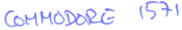

|  |
The entire source code can be downloaded from the local file library or from the Funet archive.
addfil.src Add file to a directory
addrel.src Add blocks to a relative file
block.src Block and user commands
burst.src Burst routines
close.src Close routine
com.src Copyright
copall.src Copy all
copset.src Diskcopy setup
dskintsf.src Drive initialization
duplct.src Duplicate a disk
duplct1.src Duplicate a disk - additional routines
erproc.src Error processing
fastld.src Fast load
fastutl.src Burst commands
fndrel.src Find relative file
gcr7.src GCR decoding tables
gcr8.src GCR decoding tables
gcr9.src GCR decoding tables
gcrtable.src GCR decoding tables
getact.src Get active buffer
idlesf.src Idle loop
irq.src Master IRQ
irq1541.src 1541 mode IRQ
irq1571.src 1571 mode IRQ
jobssf.src Job control
lccbingc.src Fast binary to GCR
lcccntrl.src Main controller loop
lccconhd.src Header conversion
lccend.src Motor and stepper control
lccfmt1.src Format routine
lccfmt2.src Format routine
lccfmt2a.src Format routine
lccfmt3.src Formverify routine
lccfmt3a.src Formverify routine
lccfmt4.src Format routine
lccfmt4a.src Format routine
lccgcrbi.src Fast GCR to binary conversion
lccgcrbn.src Even faster GCR to binary conversion
lccinit.src Controller initialization
lccio.src Defs for Low Cost Controller
lccread.src Read in a track
lccread1.src Read in a track
lccseek.src Seek
lccseek1.src Seek
lccutil.src Utility routines
lccutil1.src Utility routines
lccwrt.src Write job
lccwrt1.src Write job
leds.src LED control
lookup.src Lookup files on the stream
lstdir.src Load directory
map.src Build a new map on diskette
master.src Link everything
memrw.src Memory access commands
mfmcntrl.src MFM control
mfmsubr.src MFM subroutines
mfmsubr1.src MFM subroutines
mfmsubr2.src MFM subroutines
mfmsubr3.src MFM subroutines
new.src Initialize a disk
newss.src Generates a new ss
newvec.src Vector table
notes.src Revision history
nulbuf.src Set null records
open.src Open channel
opnchnl.src Open read channel
parsex.src Parse & execute
patchn.src Patches
record.src Relative file record
rel1.src Relative file
rel2.src Relative file
rel3.src Relative file
rel4.src Relative file
romsf.src ROM start
romtblsf.src ROM tables
signatur.src ROM test and signature check
system.src
wd1770.src Few macros
| This page has been created by Sami Rautiainen. | |
| Read the small print. | Last updated February 13, 2020. |